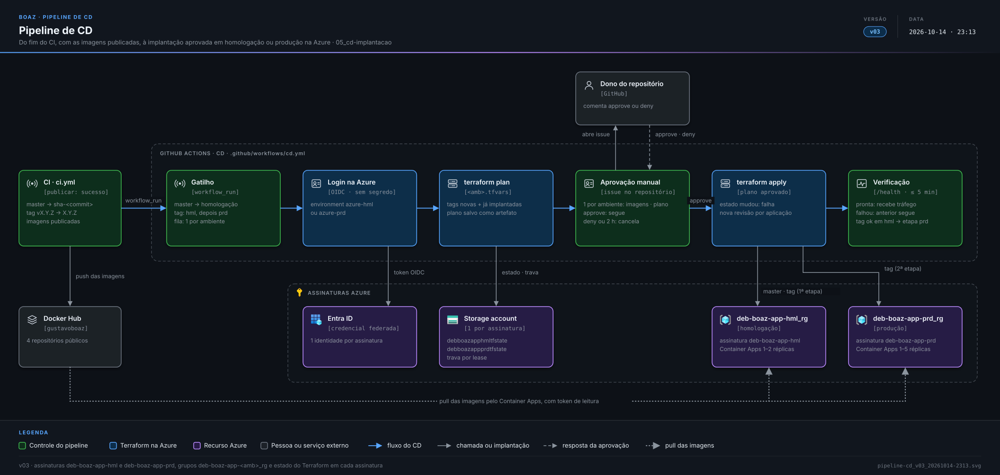

Contexto
O CI de CI e qualidade testa o código e, aprovado, envia as imagens ao Docker Hub (Publicação das imagens). Este documento define a etapa seguinte: o workflow de CD pede uma segunda aprovação e, aprovado, implanta essas imagens na Azure com Terraform, em dois ambientes — homologação, com uma unidade de cada componente e sem escala, e produção, com escala parametrizada.
Premissas: tudo roda na Azure; o Terraform é um único módulo raiz, sem módulos próprios, e os ambientes diferem só nos arquivos de variáveis. Localmente o projeto usa MongoDB e Redis (Stack de desenvolvimento RNF-06); na Azure eles são o Cosmos DB for MongoDB e o Azure Managed Redis, compatíveis com os mesmos clientes. Monitoramento e custos (Log Analytics, Application Insights e orçamentos) são serviços do grupo de recursos e não ocupam subnet: na VNet ficam só o Container Apps, os private endpoints e, em produção, o Application Gateway.
Regras de negócio
| ID | Regra |
|---|---|
RN-17 | Existem dois ambientes, cada um numa assinatura Azure própria com um grupo de recursos: homologação na assinatura deb-boaz-app-hml (grupo deb-boaz-app-hml_rg) e produção na deb-boaz-app-prd (grupo deb-boaz-app-prd_rg) |
RN-18 | Um merge na branch principal implanta em homologação as imagens sha-<commit> publicadas por ele |
RN-19 | Uma tag vX.Y.Z implanta as imagens X.Y.Z publicadas por ela primeiro em homologação e, depois, em produção |
RN-25 | A etapa de produção de uma tag só começa depois que a mesma tag foi implantada e verificada em homologação; se a etapa de homologação falhar ou for negada, a tag não chega a produção |
RN-20 | Nenhuma implantação acontece sem aprovação manual, pedida somente depois que as imagens foram publicadas; cada ambiente tem a sua aprovação, inclusive nas duas etapas de uma tag |
RN-21 | Componente sem imagem nova na execução mantém a imagem que já está implantada |
RN-22 | Homologação valida uma unidade de cada componente: nunca escala a zero e não é dimensionada para carga |
RN-23 | Toda mudança de infraestrutura passa pelo Terraform do repositório; alteração manual no portal é desfeita na implantação seguinte |
RN-24 | Segredo nunca fica no código, nos arquivos de variáveis do Terraform nem em texto no workflow: fica no Key Vault do ambiente |
Requisitos não funcionais
| ID | Frente | Requisito |
|---|---|---|
RNF-47 | CD | O CD é o workflow .github/workflows/cd.yml, disparado pelo fim do CI (workflow_run) somente quando o job de publicação de imagens terminou com sucesso na branch principal ou numa tag vX.Y.Z |
RNF-48 | CD | O CD roda terraform plan e guarda o plano como artefato da execução antes de pedir aprovação |
RNF-49 | CD | O CD pede aprovação abrindo uma issue por ambiente, com o ambiente, as imagens e tags a implantar, o resumo do plano (recursos criados, alterados e destruídos) e o link da execução |
RNF-50 | CD | A implantação segue quando o dono do repositório comenta approve na issue; deny ou 2 horas sem resposta cancelam sem alterar nada na Azure |
RNF-51 | CD | Aprovado, o CD aplica exatamente o plano aprovado (terraform apply do artefato); se a infraestrutura mudou depois do plano, a execução falha sem aplicar |
RNF-52 | CD | O CD se autentica na Azure por OIDC (credencial federada, sem segredo de cliente), com uma identidade por ambiente, com permissão só na assinatura daquele ambiente, guardada nos environments azure-hml (restrito à branch principal e às tags v*) e azure-prd (restrito às tags v*) do GitHub |
RNF-53 | CD | Só uma implantação por ambiente roda por vez; as seguintes entram em fila, sem cancelar a que está em andamento |
RNF-54 | CD | Uma revisão nova de contêiner só recebe tráfego depois de passar na verificação de prontidão (/health); se não passar em 5 min, a revisão anterior continua atendendo e a execução falha |
| ID | Frente | Requisito |
|---|---|---|
RNF-55 | Terraform | O código fica em 4_CI_CD/terraform/: um módulo raiz, sem módulos próprios, com hml.tfvars e prd.tfvars para os valores de cada ambiente |
RNF-56 | Terraform | O estado de cada ambiente fica numa storage account do próprio grupo de recursos (debboazapphmltfstate e debboazappprdtfstate), criada uma vez fora do Terraform, com trava contra execuções simultâneas |
RNF-57 | Terraform | As versões do Terraform e do provider azurerm ficam fixadas no repositório, seguindo Stack de desenvolvimento RN-01 |
RNF-58 | Terraform | Réplicas mínima e máxima, CPU e memória de cada aplicação são variáveis dos arquivos .tfvars; mudar a escala não exige alterar código |
| ID | Frente | Requisito |
|---|---|---|
RNF-86 | Rede | Os dois ambientes, o estado do Terraform e todos os recursos ficam na região Brazil South |
RNF-59 | Rede | Cada ambiente tem uma VNet própria, sem conexão entre elas: homologação 10.10.0.0/16 e produção 10.20.0.0/16 |
RNF-60 | Rede | Cada VNet tem as subnets snet-aca (/23, ambiente do Container Apps) e snet-pe (/27, private endpoints); a de produção tem também snet-appgw (/24, Application Gateway) |
RNF-61 | Rede | Cosmos DB, Redis e Key Vault são acessados pelas aplicações só por private endpoint em snet-pe, com nomes resolvidos por zonas Private DNS ligadas à VNet (privatelink.mongo.cosmos.azure.com, privatelink.redis.azure.net e privatelink.vaultcore.azure.net) |
RNF-62 | Rede | Cosmos DB e Redis têm o acesso público desligado |
RNF-63 | Rede | Um NSG em snet-pe aceita entrada só de snet-aca; em produção, o NSG de snet-appgw aceita só HTTPS (443) da internet e as portas de gerenciamento exigidas pelo Application Gateway |
| ID | Frente | Requisito |
|---|---|---|
RNF-64 | Computação | As quatro imagens (Publicação das imagens RNF-27) rodam como aplicações de um ambiente do Azure Container Apps com perfil Consumption, integrado a snet-aca |
RNF-65 | Computação | Em homologação cada aplicação roda com 1 a 2 réplicas de 0,25 vCPU e 0,5 GiB |
RNF-66 | Computação | Em produção cada aplicação roda com 1 a 5 réplicas, criando uma réplica nova quando passa de 30 requisições HTTP simultâneas por réplica |
RNF-67 | Computação | As imagens são baixadas do Docker Hub com o usuário gustavoboaz e um token só de leitura guardado no Key Vault, para não esbarrar no limite de downloads anônimos |
RNF-68 | Segredos | Cada ambiente tem um Key Vault Standard com permissões por RBAC; as aplicações leem os segredos por uma identidade gerenciada com o papel Key Vault Secrets User |
RNF-69 | Segredos | O Terraform grava no Key Vault as cadeias de conexão do Cosmos DB e do Redis a partir dos recursos que cria; ninguém as digita |
RNF-70 | Dados | O Cosmos DB for MongoDB (RU) roda em modo serverless em homologação e com taxa de transferência autoscale compartilhada no banco em produção, com o máximo em prd.tfvars |
RNF-87 | Dados | O Cosmos DB usa a versão de protocolo MongoDB mais alta que oferece e o Azure Managed Redis a versão mais recente; a compatibilidade com o MongoDB 8.0 e o Redis 8 locais é validada em homologação |
RNF-71 | Cache | O cache usa o Azure Managed Redis no menor SKU em cada ambiente; o Azure Cache for Redis não é usado porque está em aposentadoria anunciada pela Microsoft |
| ID | Frente | Requisito |
|---|---|---|
RNF-72 | Homologação | As aplicações web e o backend ficam acessíveis de qualquer IP pela entrada HTTPS pública do Container Apps, no domínio padrão gerado pela Azure |
RNF-73 | Homologação | O backend publica a documentação OpenAPI e o Swagger UI em /swagger, para testar o backend sem passar pela web |
RNF-74 | Produção | O único ponto público é um Application Gateway WAF_v2 com IP público estático, com autoscale de 0 a 2 unidades de capacidade, redirecionando HTTP para HTTPS |
RNF-75 | Produção | O ambiente do Container Apps é interno: nenhuma aplicação tem IP público, e o Application Gateway as alcança pela VNet, com o domínio do ambiente resolvido por uma zona Private DNS |
RNF-76 | Produção | O navegador acessa o backend só através das aplicações web: cada uma encaminha /api/* para o endereço interno do backend, que não tem rota própria no Application Gateway para a web |
RNF-77 | Produção | Os apps Android e iOS acessam o backend pela rota /mobile/* do Application Gateway; a WAF bloqueia requisições sem o cabeçalho X-App-Attestation |
RNF-78 | Produção | O backend recusa com 401 a requisição de /mobile/* cujo token de atestação não seja válido (Play Integrity no Android, App Attest no iOS) |
RNF-79 | Produção | A política de WAF roda em modo Prevenção, com o conjunto de regras gerenciadas da Microsoft (DRS), uma regra que bloqueia o IP acima de 100 requisições por minuto e o bloqueio de /swagger |
RNF-80 | Produção | O certificado TLS do domínio fica no Key Vault, lido pelo Application Gateway por identidade gerenciada |
| ID | Frente | Requisito |
|---|---|---|
RNF-81 | Monitoramento | Cada ambiente tem um workspace do Log Analytics com retenção de 30 dias, que recebe os logs do Container Apps e, em produção, do Application Gateway |
RNF-82 | Monitoramento | Cada ambiente tem um Application Insights ligado ao workspace, que recebe a telemetria do backend |
RNF-83 | Monitoramento | O workspace de homologação tem limite diário de ingestão de 1 GB |
RNF-84 | Custos | Cada grupo de recursos tem um orçamento mensal no Cost Management, de R$ 300,00 em homologação e R$ 1.500,00 em produção, com alerta por e-mail ao dono do repositório em 80 % e em 100 % do valor |
RNF-85 | Custos | Todo recurso recebe as tags projeto=boaz, ambiente=hml|prd e gerenciado-por=terraform, para filtrar os custos |
| ID | Frente | Requisito |
|---|---|---|
RNF-88 | Nomes | Todo recurso se chama deb-boaz-app-<amb>_<sufixo>, com <amb> igual a hml ou prd; quando a Azure não aceita _ no nome, usa -, e quando não aceita nem - (storage account), junta tudo em minúsculas |
RNF-89 | Nomes | As aplicações do Container Apps têm o nome da imagem (backend-mono, frontend-hub, frontend-landing-page, frontend-quest), porque a Azure limita o nome a 32 caracteres |
RNF-90 | Terraform | Assinaturas e grupos de recursos são criados fora do Terraform; o Terraform os lê como existentes e nunca os cria nem os apaga |
| Recurso | Nome |
|---|---|
| Assinatura · grupo de recursos | deb-boaz-app-<amb> · deb-boaz-app-<amb>_rg |
| VNet · subnets | deb-boaz-app-<amb>_vnet · _snet-aca, _snet-pe, _snet-appgw (só prd) |
| NSGs | deb-boaz-app-<amb>_nsg-pe · _nsg-appgw (só prd) |
| Private endpoints | deb-boaz-app-<amb>_pe-kv · _pe-cosmos · _pe-redis |
| Ambiente do Container Apps | deb-boaz-app-<amb>-cae |
| Identidade gerenciada | deb-boaz-app-<amb>_id |
| Key Vault · Cosmos DB · Redis | deb-boaz-app-<amb>-kv · -cosmos · -redis |
| Application Gateway · IP público · política de WAF | deb-boaz-app-prd_agw · _pip · _waf |
| Log Analytics · Application Insights | deb-boaz-app-<amb>-log · deb-boaz-app-<amb>_appi |
| Orçamento | deb-boaz-app-<amb>_budget |
| Estado do Terraform | debboazapp<amb>tfstate |
Em aberto
- Domínio público de produção e origem do certificado TLS; até lá, o domínio fica como variável vazia no arquivo de variáveis de produção Produto
Diagramas
![Ambiente de homologação na Azure: assinatura deb-boaz-app-hml, grupo de recursos deb-boaz-app-hml_rg, com VNet 10.10.0.0/16; na subnet snet-aca, o ambiente externo do Container Apps com backend-mono e as três aplicações web, 1 a 2 réplicas, acessadas por HTTPS pelo usuário web, pela pessoa desenvolvedora via Swagger e pelos apps móveis; na subnet snet-pe, private endpoints de Key Vault, Cosmos DB for MongoDB serverless e Azure Managed Redis, com zonas Private DNS; Log Analytics, Application Insights e orçamento; imagens baixadas do Docker Hub e infraestrutura aplicada pelo CD com Terraform](../3_Arquitetura/implantacao-hml_v03_20261014-2313.svg)
3_Arquitetura/implantacao-hml_v03_20261014-2313.svg![Ambiente de produção na Azure: assinatura deb-boaz-app-prd, grupo de recursos deb-boaz-app-prd_rg, com VNet 10.20.0.0/16; Application Gateway WAF_v2 com IP público em snet-appgw como único ponto público, roteando a web para as aplicações web e /mobile/* para o backend, com política de WAF; ambiente interno do Container Apps em snet-aca com 1 a 5 réplicas, em que as aplicações web encaminham /api/* ao backend; private endpoints de Key Vault, Cosmos DB autoscale e Azure Managed Redis em snet-pe com zonas Private DNS; Log Analytics, Application Insights e orçamento](../3_Arquitetura/implantacao-prd_v03_20261014-2313.svg)
3_Arquitetura/implantacao-prd_v03_20261014-2313.svg
3_Arquitetura/pipeline-cd_v03_20261014-2313.svg